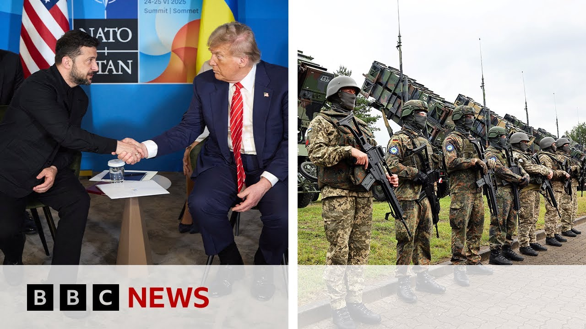

【美国暂停向乌克兰运送部分武器以“优先考虑美国利益” | BBC新闻】
Summary: The US has paused some weapons shipments to Ukraine due to low stockpiles, affecting Patriot missiles and artillery shells, sparking concerns in Kyiv and approval from Moscow.
摘要： 由于库存不足，美国暂停向乌克兰运送部分武器，包括爱国者导弹和炮弹，引发基辅担忧，莫斯科则表示欢迎。

⏱️ Estimated Reading Time: 13 min
📚 四级生词 📚 六级生词 📚 雅思生词 📚 托福生词 📚 专八生词 📚 SAT生词 📚 考研生词 📚 GRE生词 📚 高考生词 📚 其它生词生词
Let's start in Ukraine where Keev has summoned a US diplomat over a decision to suspend weapons shipments.
首先关注乌克兰，基辅因美国暂停武器运输的决定召见了美国外交官。
On Tuesday, the White House confirmed that some US deliveries had been put on pause over concerns that US stockpiles are too low.
周二，白宫证实，由于担心美国库存过低，部分对乌武器交付已暂停。
The US has not said what weapons would be affected or the scale of the roll back, but it's believed to include Patriot air defense missiles and artillery shells.
美国未说明具体受影响武器或缩减规模，但据信包括爱国者防空导弹和炮弹。
Ukraine has been urgently requesting more Patriots to protect its cities from Russian attacks.
乌克兰一直紧急请求更多爱国者导弹以保护城市免受俄罗斯袭击。
The US has provided tens of billions of dollars of military aid to Ukraine since the invasion by Russia in 2022.
自2022年俄罗斯入侵以来，美国已向乌克兰提供数百亿美元军事援助。
A White House spokesperson said the decision was being made to put America's interests first.
白宫发言人表示，此举是为了“优先考虑美国利益”。
Russia has welcomed the news, saying it would bring the war closer to an end.
俄罗斯对此表示欢迎，称这将加速战争结束。
Keev is warning though any delays will only embolden Moscow.
但基辅警告称，任何延误只会助长莫斯科的气焰。
Let's bring your action first from one Ukrainian MP.
首先听听一位乌克兰议员的表态。
This decision is certainly very unpleasant for us.
这一决定对我们来说非常不利。
It's painful and against the background of the terrorist attacks which Russia commits against Ukraine against peaceful towns, cities, villages, citizens of Ukraine that die almost every day from such terrorist attacks.
在俄罗斯对乌克兰和平城镇、村庄和公民实施恐怖袭击的背景下，这令人痛心——几乎每天都有乌克兰人因此丧生。
It's a very unpleasant situation.
这是非常糟糕的局面。
Let's take you live to Kev.
现在连线基辅现场。
We can join our correspondent there, Paul Adams.
我们的记者保罗·亚当斯正在当地。
And in Moscow is our Russia editor, Steve Rosenberg.
在莫斯科的是我们的俄罗斯事务编辑史蒂夫·罗森伯格。
Uh Paul, just hearing there what a blow this could potentially be for Ukraine.
保罗，这显然可能对乌克兰造成重大打击。
Just give us a sense of the reaction there.
请介绍一下当地反应。
Well, it's very interesting because you, as that clip just illustrated, there is an immediate kind of uh shudder of horror at the possibility that some of this vitally needed uh defensive equipment will somehow no longer be available or at some point may be withdrawn.
值得注意的是，正如刚才片段所示，人们立即对可能失去这些关键防御装备感到恐慌。
But there's a statement in the last 20 minutes or so from the defense ministry which I'm going to quote from because I think it's quite important.
但乌克兰国防部约20分钟前发布的声明非常重要。
It says first of all there has been no official confirmation of any suspension yet.
声明首先指出尚未收到任何官方暂停通知。
Uh the defense ministry says it's looking for further information.
国防部表示正在寻求更多信息。
That's obviously why we saw the US diplomat being called to the foreign ministry uh to uh explain exactly what's going on.
这显然也是美国外交官被传唤至外交部要求解释的原因。
And also the defense ministry is urging people not essentially to jump to conclusions, not to speak about things without uh adequate information.
国防部还呼吁民众不要妄下结论或传播不实信息。
This is not a repeat of the situation we had back earlier in the year following that dreadful row between uh Vladimir Zilinsky and President Trump in the Oval Office in which the US suspended aid shipments and uh intelligence cooperation for a week.
这与年初泽连斯基与特朗普在白宫争执后美国暂停援助一周的情况不同。
There's nothing of that nature going on.
当前情况并非如此。
This is a US decision to look at its stocks of its dwindling stocks of equipment dwindling because of obviously supplies to Ukraine but also uh events in the Middle East and to take stock of exactly where uh the US uh inventories are.
这是美国基于对军火库存的评估——既因援乌消耗，也受中东局势影响。
So we don't know how long this suspension is going to last.
因此我们不清楚暂停将持续多久。
We also don't know precisely which uh items of equipment are going to be affected.
也不确定具体哪些装备会受影响。
Although as you say there's been a lot of focus on Patriot missiles and also on the missiles used by F-16 jets to intercept uh ballistic missiles and cruise missiles.
尽管如你所说，焦点集中在爱国者导弹和F-16拦截弹道导弹与巡航导弹的导弹上。
So there is certainly a great deal of anxiety but everyone from the president on down is basically saying let's find out what is really happening here.
虽然存在严重担忧，但从总统到民众都表示应先弄清事实。
A great deal of anxiety Steve and also these real concerns that this could embolden Russia.
史蒂夫，这种焦虑确实存在，人们担心这会鼓舞俄罗斯。
Have we had a response from the Kremlin?
克里姆林宫有回应吗？
Yes.
有的。
Uh a short while ago uh on the daily Kremlin conference call, Dimmitu Pescov, Vladimir Putin spokesman was asked for his reaction to this news.
稍早前普京发言人佩斯科夫在每日简报中被问及此事。
He didn't say very much.
他并未多谈。
Uh but what he did say was the fewer weapons that Ukraine is supplied with, the sooner the special military operation will end.
但表示对乌军援越少，"特别军事行动"结束得越快。
The special military operation being the label the Russians give to Russia's war in Ukraine.
俄方将其在乌行动称为"特别军事行动"。
Now, what he said was obviously not earthshattering.
这番言论并不惊人。
It was obvious, right?
这很显而易见，对吧？
And Russia obviously is pleased at the prospect of less US uh military assistance to Ukraine because US military aid to Ukraine has been uh so important in helping Ukraine get to where it is now, to helping Ukraine survive um the the Russian invasion.
俄罗斯显然乐见美国减少军援，因美援对乌克兰抵抗入侵至关重要。
Russia is mounting attacks on Ukraine night after night, Paul.
保罗，俄罗斯正夜复一夜地攻击乌克兰。
And I'm sure if you asked anyone on the streets of Kev, they would tell you that they really need these patriots.
若在基辅街头询问，民众都会表示急需爱国者系统。
It's the one thing every Ukrainian understands.
这是所有乌克兰人的共识。
Can you explain to us a bit more about what patriots do?
能否详细说明爱国者系统的作用？
Yes.
好的。
So essentially you have a kind of multi-layered air defense system designed to protect cities like Kiev and other big cities and of course also military and industrial facilities that involves at the very highest end the Patriot missile.
乌克兰建立了多层防空系统保护基辅等大城市及军事工业设施，其中爱国者是最尖端部分。
It's a highly sophisticated system designed to intercept ballistic missiles.
这种精密系统专为拦截弹道导弹设计。
Probably the single most deadly threat uh posed by uh Russia.
这可能是俄罗斯最具威胁的武器。
Then of course you have all sorts of other systems from machine guns mounted on the back of pickup trucks on the ground to F-16 jets supplied by the West uh which can fire missiles at oncoming incoming uh cruise missiles and also in some cases drones.
此外还有皮卡机枪到西方提供的F-16战机等多层次防御，可拦截巡航导弹和无人机。
All of that is really important and the F-16s actually over the past year have really proved themselves a vital component of all of this.
F-16战机过去一年已证明其关键作用。
It's worth noting this though.
但需注意：
At the moment the US accounts for around 20% of the weaponry arriving uh in Ukraine, the Europe about 25% and Ukraine itself around 50%.
目前美国占乌接收武器的20%，欧洲25%，乌克兰自产50%。
But it is that crucial high-end equipment like the Patriots, like the missiles used on the F-16s.
但爱国者系统和F-16导弹等高端装备至关重要。
Those are the things that that Ukraine knows it can really only get uh from the United States until such time as it either builds its own capability or can somehow get it from somewhere else.
乌克兰明白这些目前只能从美国获取，除非自主生产或另寻渠道。
Steve, there Steve, there is obviously ongoing conversations being had around the world about how to stop this war and influence the outcomes.
史蒂夫，国际社会正讨论如何结束战争并影响结果。
We know that President Mron has also spoken to President Putin in the last 24 hours.
马克龙总统24小时内与普京通话。
That's the first time in three years.
这是三年来首次。
What's come out of that?
有何成果？
Yeah, that was interesting and a little bit unexpected.
这既有趣又出人意料。
Uh this conversation telephone call happened yesterday.
通话发生在昨天。
Uh as you say, the first time in just under three years that President Mron and President Putin have spoken.
如你所说，是近三年来首次对话。
Today the Kremlin said it was the initiative of President Mron uh to make this call.
克宫称马克龙主动致电。
They spoke reportedly for more than two hours about the situation in the Middle East, but of course also about the situation in Ukraine.
据报两人就中东和乌克兰局势交谈超两小时。
On the Middle East, uh the two sides seem to have more in common, have more of a a common approach.
在中东问题上双方立场更接近。
But from the Kremlin readout and the uh the Paris readout of the call on Ukraine, the two sides seem diametrically opposed.
但关于乌克兰的通报显示双方立场截然对立。
I mean, President Mron was making it clear that uh offering his unwavering support for Ukraine's sovereignty and territorial integrity and calling for a ceasefire as soon as possible.
马克龙明确支持乌克兰主权领土完整，呼吁尽快停火。
Vladimir Putin, according to the Kremlin readout, blaming the West for the the conflict in Ukraine as he has done all along.
而普京再次指责西方挑起冲突。
uh talking about Ukraine having been turned by the West into an anti-Russian um bridge head and talking again as he has done repeatedly about the need to remove the quote root causes of the conflict and uh take into account the realities on the ground.
称乌克兰被西方打造成反俄桥头堡，并重申需消除冲突"根源"并考虑现实局势。
So no sign from the readouts that the positions of Russia and France are any closer on Ukraine.
通报显示俄法在乌克兰问题上立场未接近。
And Steve, given the losses that are being sustained every single day, is there any pressure inside Russia on President Putin to bring this conflict to an end?
史蒂夫，面对每日损失，俄罗斯国内是否对普京有停战压力？
Well, if you talk about public opinion, uh I wouldn't say uh the Kremlin is feeling pressure from from the Russian public.
就民意而言，克宫并未感受到民众压力。
Certainly, there is a fatigue.
但确实存在疲劳情绪。
Uh when you speak to people, people talk about the war and they do use that word war.
民众交谈时使用"战争"一词。
They don't say special military operation.
而非"特别军事行动"。
And people can see that it's a war.
人们清楚这是战争。
They switch on the television.
打开电视就能看到。
They see tanks and artillery.
坦克与火炮。
It it's a war.
这就是战争。
Uh and so many people who speak to us say, "We want this to be over as soon as possible. We want peace."
许多受访者表示希望尽快结束战争、恢复和平。
Then you ask people, "How can the peace be achieved?"
但当问及如何实现和平时：
Many people say, "Well, we can't influence that. It's up to the people in power to decide how to do that."
多数人认为决定权在当权者手中。
Some people say, "Well, we need negotiations. We need talks."
有人主张谈判解决。
Other people say peace can only be achieved by a Russian victory.
也有人认为只有俄方获胜才能带来和平。
So different approaches, but certainly we're in the fourth year of this war now.
观点各异，但战争已进入第四年。
And it's had devastating consequences, of course, first and foremost for Ukraine, the scale of death and destruction there.
这场战争造成毁灭性后果，首当其冲是乌克兰的人员伤亡和破坏。
But people here in Russia are feeling tired and the economy is starting to buckle.
俄罗斯民众感到疲惫，经济开始吃紧。
Um, almost every day the Russian newspapers, and this is a very controlled media environment, right?
在严格管控的媒体环境下：
But in the Russian newspapers every day there are articles about the economic problems building up uh in Russia.
俄媒每日都有经济问题相关报道。
Uh so um people can feel the effects uh of this war.
民众正感受到战争的影响。
Steve Paul, good to see you Steve Paul, good to see you both.
史蒂夫、保罗，很高兴见到你们。
Thank you so much.
非常感谢。